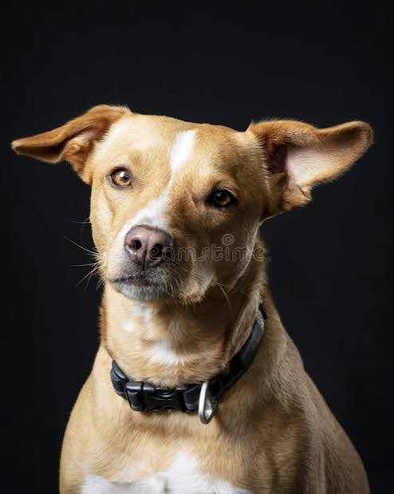
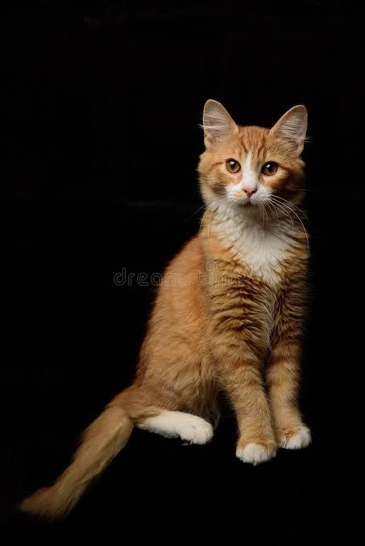
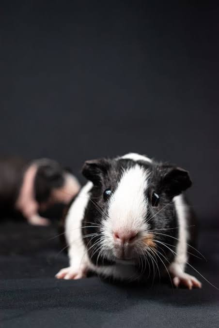

Huellas & Salud
Brindamos atención médica integral y compasiva para el bienestar de tu mascota.
Reserva una CitaNuestros Pacientes Felices



🏆 Nuestros Logros
El fruto de nuestro esfuerzo constante desde que iniciamos nuestro camino en el año 2021:
- Más de 1,500 Vidas Salvadas: Entre mascotas atendidas con éxito en nuestra clínica médica y hermosos animalitos rescatados de las calles.
- Adopciones Responsables: Hemos logrado reubicar a cientos de perritos en hogares llenos de amor y protección.
🏅 Reconocimientos
Distinciones que nos motivan a seguir trabajando día a día por los que no tienen voz:
- Premio al Impacto Social: Reconocidos por asociaciones locales gracias a nuestra dedicada labor comunitaria y campañas gratuitas de esterilización.
- Confianza de la Comunidad: Respaldados por el cariño y la fidelidad de cientos de familias que nos eligen a diario.
🚀 Nuestra Expansión
Evolucionamos de manera continua para ofrecer una infraestructura médica de primer nivel:
- Modernización Tecnológica: Incorporación de equipamiento avanzado en nuestro propio laboratorio clínico y zona de quirófano.
- Nuevas Instalaciones: Ampliación de la clínica con salas independientes de hospitalización y un área exclusiva de estética canina.
Nuestros Servicios Principales
Cuidado profesional para perros, gatos y animales exóticos.
- Consultas Generales
- Vacunación y Desparasitación
- Cirugía y Quirófano